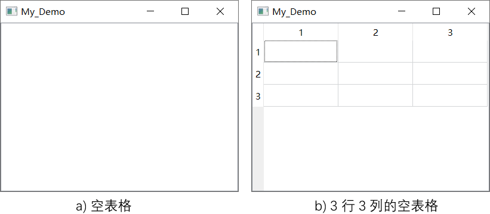

首页 > 编程笔记
Qt QTableWidget表格控件的用法（非常详细）
QTableWidget 是 Qt 提供的一种表格控件（如图 1 所示），类似于我们经常使用的 Excel 表格，可以将数据以表格的方式展示给用户。QTableWidget 的结构布局如图 1 所示。
图 1 QTableWidget控件
整个 QTableWidget 表格可以分为 3 个区域：
QTableWidget 继承自 QTableView 类，QTableView 类也可以用来显示表格控件。QTableWidget 可以看做是 QTableView 的“简易版”或者“升级版”，它们的区别在于：
总之，QTableWidget 只适合显示少量的数据（几百或几千个），如果想要显示更多的数据，应该用 QTableView。此外，QTableView 还有一些更高级的用法，我们会在讲解 QTableView 时做重点介绍。
QTableWidget 框架在实际开发中经常使用，如果您是一名初学者，我建议先学习 QTableWidget 控件，它可以降低您学习 QT 表格控件的成本，可以更快地掌握表格的用法。
QTableWidget 类提供了 2 个构造函数，分别是：
实用 QTableWidget 表格之前，必须指定表格的行和列。我们可以直接调用第 2 个构造函数，这样既创建了表格又指定了行和列。当然，也可以调用第 1 个构造函数先创建表格，然后借助 QTableWidget 类提供的成员方法指定行和列，两种方式都可以。
与数组下标类似，QTableWidget 表格单元格的行标和列标都是从 0 开始。例如在图 2b) 中，选中的单元格的坐标是 (0, 0)。
定义 QTableWidgetItem 类的实例对象之前，程序中要引入
QTableWidgetItem 单元格通常用来存放 text 文本和 icon 图标，借助该类提供的 setBackground()、setTextAlignment() 等成员方法，我们可以轻松设置每个单元格的字体、颜色、背景等。
QTableWidgetItem 类还对
默认情况下，用户可以选中 QTableWidget 表格中的某个单元格，还可以对目标单元格中的文本内容进行修改。通过设置 QTableWidget 表格，可以禁止用户编辑所有单元格。
QTableWidgetItem 类提供了很多实用的成员方法，其中比较常用的方法如下表所示：
QTableWidget 类提供了很多实用的成员方法，它还从父类继承了很多方法，下表给大家罗列了实际场景中操作 QTableWidget 表格用得最多的几个方法，这些方法是初学者必须要掌握的：
下表展示了 QTableWidget 类提供的一些信号函数以及它们各自的功能：
QTableWiget 表格也可以接收信号并做出相应地响应，例如：
图 1 QTableWidget控件
整个 QTableWidget 表格可以分为 3 个区域：
- 区域 ① 和 ② 都是表头，区域 ① 设置每一行的表头，区域 ② 设置每一列的表头。我们可以自定义两个区域内的表头，比如第一列是各个教程的名称，所以第一列的表头可以修改为“教程名称”；
- 区域 ③ 为数据区，表格中所有的数据都位于此区域，该区域内可以存放单元格，也可以存放按钮、文本框等控件。
默认情况下，表格会显示表头，表头的内容为行号或列号。根据实际需要，我们可以将表头隐藏起来。
QTableWidget 继承自 QTableView 类，QTableView 类也可以用来显示表格控件。QTableWidget 可以看做是 QTableView 的“简易版”或者“升级版”，它们的区别在于：
- QTableWidget 使用起来更简单，而 QTableView 的用法相对比较复杂。
- QTableView 可以存储大量的数据（例如几十万甚至几百万），用户浏览表格中的数据时不会出现卡顿等现象；尽管 QTableWidget 也能用来存储大量的数据，但用户使用时可能出现卡顿等现象，且显示的数据越多，类似的现象越明显。
总之，QTableWidget 只适合显示少量的数据（几百或几千个），如果想要显示更多的数据，应该用 QTableView。此外，QTableView 还有一些更高级的用法，我们会在讲解 QTableView 时做重点介绍。
QTableWidget 框架在实际开发中经常使用，如果您是一名初学者，我建议先学习 QTableWidget 控件，它可以降低您学习 QT 表格控件的成本，可以更快地掌握表格的用法。
QTableWidget表格的创建
使用 QTableWidget 控件，必须先引入<QTableWidget>头文件。QTableWidget 类提供了 2 个构造函数，分别是：
QTableWidget(QWidget *parent = Q_NULLPTR)
QTableWidget(int rows, int columns, QWidget *parent = Q_NULLPTR)

图 2 创建 QTableWidget 表格
图 2 创建 QTableWidget 表格
实用 QTableWidget 表格之前，必须指定表格的行和列。我们可以直接调用第 2 个构造函数，这样既创建了表格又指定了行和列。当然，也可以调用第 1 个构造函数先创建表格，然后借助 QTableWidget 类提供的成员方法指定行和列，两种方式都可以。
与数组下标类似，QTableWidget 表格单元格的行标和列标都是从 0 开始。例如在图 2b) 中，选中的单元格的坐标是 (0, 0)。
QTableWidgetItem单元格
QTableWidget 表格中，每个单元格都是 QTableWidgetItem 类的实例对象。定义 QTableWidgetItem 类的实例对象之前，程序中要引入
<QTableWidgetItem>头文件。QTableWidgetItem 类提供了 4 个构造函数：
QTableWidgetItem(int type = Type)
QTableWidgetItem(const QString &text, int type = Type)
QTableWidgetItem(const QIcon &icon, const QString &text, int type = Type)
QTableWidgetItem(const QTableWidgetItem &other) //复制（拷贝）构造函数
QTableWidgetItem 单元格通常用来存放 text 文本和 icon 图标，借助该类提供的 setBackground()、setTextAlignment() 等成员方法，我们可以轻松设置每个单元格的字体、颜色、背景等。
QTableWidgetItem 类还对
<小于运算符进行了重载，根据各个单元格存储的文本内容（字符串），多个单元格之间可以直接比较大小。借助这一特性，我们可以很轻易地实现“单元格排序”功能。默认情况下，用户可以选中 QTableWidget 表格中的某个单元格，还可以对目标单元格中的文本内容进行修改。通过设置 QTableWidget 表格，可以禁止用户编辑所有单元格。
QTableWidgetItem 类提供了很多实用的成员方法，其中比较常用的方法如下表所示：
| 成员方法 | 功 能 |
|---|---|
| setText(const QString &text) | 设置单元格中的文本。 |
| setIcon(const QIcon &icon) | 给单元格添加图标。 |
| setBackground(const QBrush &brush) | 设置单元格的背景。 |
| setFont(const QFont &font) | 设置单元格中文本的字体。 |
| setForeground(const QBrush &brush) | 设置单元格中字体的颜色。 |
| setTextAlignment(int alignment) | 设置单元格中文本的对齐方式。 |
| setToolTip(const QString &toolTip) | 给单元格设置提示信息。 |
QTableWidget表格的使用
对于创建好的 QTableWidget 表格，我们可以借助该类提供的成员方法快速地操作它。QTableWidget 类提供了很多实用的成员方法，它还从父类继承了很多方法，下表给大家罗列了实际场景中操作 QTableWidget 表格用得最多的几个方法，这些方法是初学者必须要掌握的：
| 成员方法 | 功 能 |
|---|---|
| setRowCount(int rows) | 设置表格的行数。 |
| setColumnCount(int columns) | 设置表格的列数。 |
| setRowHeight(int row, int height) | 设置指定行的行高。 |
| setColumnWidth(int column, int width) | 设置指定列的宽度。 |
| setCellWidget(int row, int column, QWidget *widget) |
向表格中的指定位置添加 widget 控件。
|
| setHorizontalHeaderLabels(const QStringList &labels) | 设置表格的水平表头。 |
| setVerticalHeaderLabels(const QStringList &labels) | 设置表格的竖直表头。 |
| setItem(int row, int column, QTableWidgetItem *item) |
向表格指定位置添加单元格。 获取指定位置的单元格，可以借助 item(int row, int column) 或者 itemAt(int ax, int ay) 方法。 |
| setEditTriggers(EditTriggers triggers) | 当 triggers 参数值为 QAbstractItemView::NoEditTriggers 时，表示禁止用户编辑单元格。 |
| resize(int w, int h) | 设置表格的尺寸。 |
| setFont(const QFont &) | 设置表格数据区中文本的字体和大小。 |
QTableWidget信号和槽
QTableWidget 类提供的信号函数，可以监听用户对表格中的哪个单元格进行了何种操作，常见的操作包括点击、双击、按下、编辑等。下表展示了 QTableWidget 类提供的一些信号函数以及它们各自的功能：
| 信号函数 | 功 能 |
|---|---|
| cellClicked(int row,int column) | 当某个单元格被点击时，触发该信号，row 和 columu 就是被点击的单元格的位置。 |
| cellDoubleClicked(int row,int column) | 当某个单元格被双击时，触发该信号，row 和 columu 就是被点击的单元格的位置。 |
| cellEntered(int row,int column) | 当某个单元格被按下时，触发该信号，row 和 columu 就是被点击的单元格的位置。 |
| cellChanged(int row, int column) | 当某个单元格中的数据发生改变时，触发该信号，row 和 columu 就是被改变的单元格的位置。 |
| itemClicked(QTableWidgetItem *item) | 当某个单元格被点击时，触发该信号，item 就是被点击的单元格。 |
| itemDoubleClicked(QTableWidgetItem *item) | 当某个单元格被双击时，触发该信号，item 就是被双击的单元格。 |
| itemEntered(QTableWidgetItem *item) | 当某个单元格被按下时，触发该信号，item 就是被按下的单元格。 |
| itemChanged(QTableWidgetItem *item) | 当某个单元格中的数据发生改变时，触发该信号，item 就是被改变的单元格。 |
QTableWiget 表格也可以接收信号并做出相应地响应，例如：
| 槽函数 | 功 能 |
|---|---|
| clear() | 删除表格中所有单元格的内容，包括表头。 |
| clearContents() | 不删除表头，仅删除表格中数据区内所有单元格的内容， |
| insertColumn(int column) | 在表格第 column 列的位置插入一个空列。 |
| insertRow(int row) | 在表格第 row 行的位置插入一个空行。 |
| removeColumn(int column) | 删除表格中的第 column 列，该列的所有单元格也会一并删除。 |
| removeRow(int row) | 删除表格中的第 row 行，该行的所有单元格也会一并删除。 |
| scrollToItem(const QTableWidgetItem *item, QAbstractItemView::ScrollHint hint = EnsureVisible) | 滑动到指定的单元格。 |
QTableWidget表格实例
接下来通过一个实例，带大家更深入地了解 QTableWidget 控件的用法。
#include <QApplication>
#include <QWidget>
#include <QLabel>
#include <QTableWidget>
#include <QTableWidgetItem>
#include <QStringList>
#include <QDebug>
#include <QPushButton>
using namespace std;
class QMyLabel:public QLabel{
Q_OBJECT
public slots:
void rsetText(QTableWidgetItem * item);
};
void QMyLabel::rsetText(QTableWidgetItem * item){
this->setText(item->text());
}
int main(int argc, char *argv[])
{
QApplication a(argc, argv);
//创建一个窗口，作为输入框和列表框的父窗口
QWidget widget;
//设置窗口的标题
widget.setWindowTitle("QTableWidget控件");
//自定义窗口的大小
widget.resize(900,500);
//在 widget 窗口中添加一个 4 行 3 列的表格
QTableWidget TableWidget(4,3,&widget);
//自定义表格的尺寸和字体大小
TableWidget.resize(900,350);
TableWidget.setFont(QFont("宋体",20));
//设置表格中每一行的表头
TableWidget.setHorizontalHeaderLabels(QStringList() << "教程" << "网址" << "状态");
//设置表格数据区内的所有单元格都不允许编辑
TableWidget.setEditTriggers(QAbstractItemView::NoEditTriggers);
//设置表格中每一行的内容
TableWidget.setItem(0,0,new QTableWidgetItem("C语言教程"));
TableWidget.setItem(0,1,new QTableWidgetItem("http://c.biancheng.net/c/"));
TableWidget.setItem(0,2,new QTableWidgetItem("已更新完毕"));
TableWidget.setItem(1,0,new QTableWidgetItem("Qt教程"));
TableWidget.setItem(1,1,new QTableWidgetItem("http://c.biancheng.net/qt/"));
TableWidget.setItem(1,2,new QTableWidgetItem("正在更新"));
TableWidget.setItem(2,0,new QTableWidgetItem("C++教程"));
TableWidget.setItem(2,1,new QTableWidgetItem("http://c.biancheng.net/cplus/"));
TableWidget.setItem(2,2,new QTableWidgetItem("已更新完毕"));
//向 widget 窗口中添加一个文本框
QMyLabel lab;
lab.setText("选中单元格");
lab.setParent(&widget);
//自定义文本框的尺寸和位置
lab.resize(900,150);
lab.move(0,350);
lab.setAlignment(Qt::AlignCenter);
lab.setFont(QFont("宋体",16));
widget.show();
//为表格和文本框之间建立关联，当用户点击表格中某个单元格时，文本框显示单元格内的文本内容。
QObject::connect(&TableWidget,&QTableWidget::itemClicked,&lab,&QMyLabel::rsetText);
return a.exec();
}
//QMyLabel类的定义应该放到 .h 文件中，本例中将其写到 main.cpp 中，程序最后需要添加 #include "当前源文件名.moc" 语句，否则无法通过编译。
#include "main.moc"
程序的执行结果为：关注公众号「站长严长生」，在手机上阅读所有教程，随时随地都能学习。内含一款搜索神器，免费下载全网书籍和视频。

微信扫码关注公众号